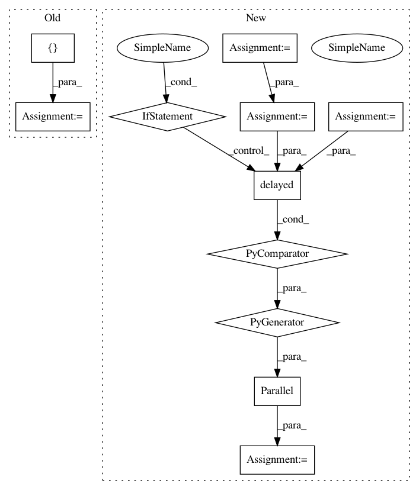

4677f1eb215c93a651b4bb5c491b2c20b9efb8b2,evaluation/GoodnessOfFit.py,GoodnessOfFit,kolmogorov_smirnov_2sample,#GoodnessOfFit#,83
Before Change
def kolmogorov_smirnov_2sample(self):
ks = []
p = []
for _ in range(self.repeat_kolmogorov):
self.resample_new_conditional_samples()
ks_new, p_new = ks_2samp(self.estimator_conditional_samples, self.proba_model_conditional_samples)
ks.append(ks_new), p.append(p_new)
After Change
return np.mean(statistics[:,0]), np.mean(statistics[:,1])
def kolmogorov_smirnov_2sample(self):
samples = np.asarray([self.sample_conditional_values() for _ in range(self.repeat_kolmogorov)])
estimator_cond_samples = samples[:, 0]
probabilistic_cond_samples = samples[:, 1]
statistics = np.asarray(Parallel(n_jobs=-1)(delayed(ktest_2sample)(estimator_cond_samples[i], probabilistic_cond_samples[i]) for i in range(
self.repeat_kolmogorov)))
return np.mean(statistics[:,0]), np.mean(statistics[:,1])
def kl_divergence(self):
P = self.probabilistic_model.pdf
In pattern: SUPERPATTERN
Frequency: 3
Non-data size: 11
Instances
Project Name: freelunchtheorem/Conditional_Density_Estimation
Commit Name: 4677f1eb215c93a651b4bb5c491b2c20b9efb8b2
Time: 2018-01-18
Author: f4bio.ferreira@gmail.com
File Name: evaluation/GoodnessOfFit.py
Class Name: GoodnessOfFit
Method Name: kolmogorov_smirnov_2sample
Project Name: facebookresearch/ParlAI
Commit Name: c3640ac78a06b512e7838a042a8829641caa3877
Time: 2017-06-09
Author: willfeng@fb.com
File Name: parlai/mturk/tasks/multi_agent_dialog/run.py
Class Name:
Method Name: main
Project Name: freelunchtheorem/Conditional_Density_Estimation
Commit Name: 4677f1eb215c93a651b4bb5c491b2c20b9efb8b2
Time: 2018-01-18
Author: f4bio.ferreira@gmail.com
File Name: evaluation/GoodnessOfFit.py
Class Name: GoodnessOfFit
Method Name: kolmogorov_smirnov_cdf